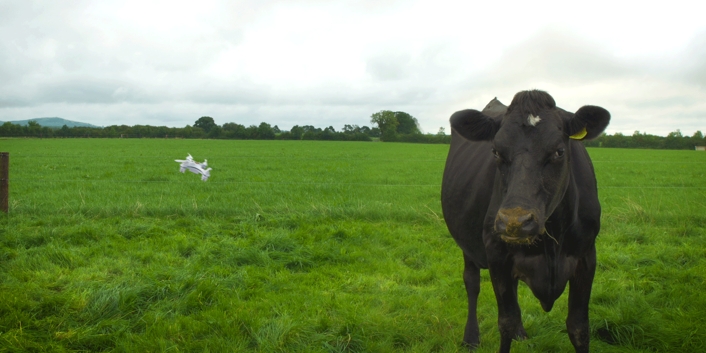

By the farmers
There is no need to give points to prove how important faming is to the human race. Everyone knows that our survival depends on that. So the blogs here will basically include new trends in farming and other problems and solutions faced and elaborated by fellow farmers and researchers.
1. New Science Shows Benefits of Grazing Native Warm-Season Grasses

When it comes to keeping cows fat and happy, the newest available science shows integrating native grasses into grazing lands is a good option for agricultural producers.
A literature review conducted by the University of Tennessee and funded by USDA found strong evidence that using native warm-season grasses caused steers to gain more weight per day and yield more beef per acre, compared with non-native grasses like tall fescue.
In this week’s #FridaysOnTheFarm, meet Gary Carder, veteran and owner of Capream Dairy in Prescott, Arizona. This Grade-A goat dairy specializes in the production of milk, gelato, and cheese, which are sold at retail locations around the state.
With goals to expand the company over the next few years, Capream plans to grow its employee base by creating job opportunities for people in the area. Gary also hopes to partner with local schools to give students hands-on experience with the goat industry.
Technology including autosteer and plant genetics could have a big effect this year as the equipment completes more work in less time.
These megatrends underscore the fact that producers need to be more flexible moving forward, Farmers also need a growth strategy to survive”. Plan to grow by 6% per year.” To succeed, they need to examine risk management tools and educate young producers. In the past three years, futures and options usage fell, and those least likely to use the tools are young producers, who are used to corn priced $6 or higher.
Smart producers keep micro and macro changes in their mind’s eye because it allows them to remain competitive. More flexibility is needed moving forward, says Richard Brock, president of Brock Associates, a commodity marketing service that identified 10 emerging themes in agriculture in a recent report.